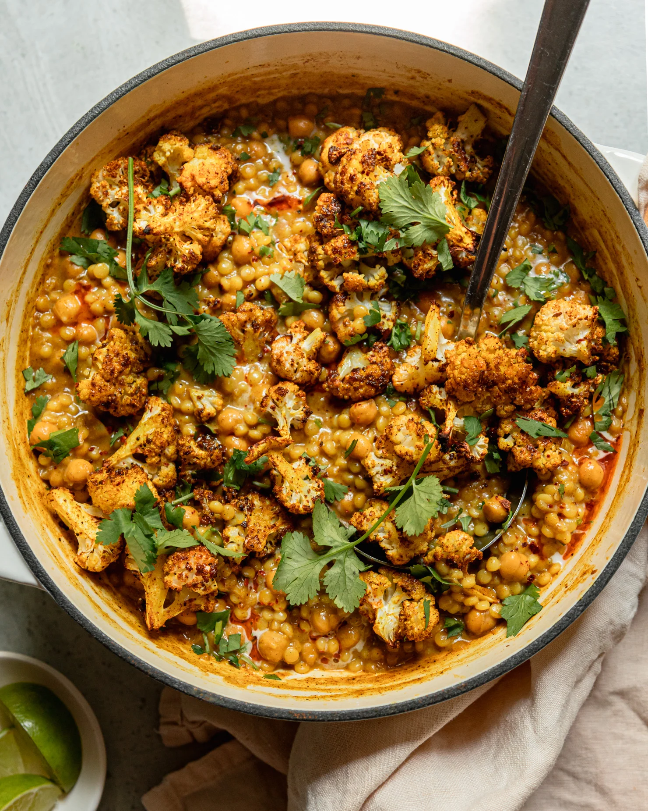

COUSCOUS

DESCRIPTION
Couscous is a light, fluffy North African dish made from tiny steamed
granules of durum wheat. When cooked, the grains separate easily and soak
up the flavors of broth, butter, or spices. On its own, couscous has a
mild nutty taste, but when paired with grilled chicken, roasted
vegetables, or spiced stews, it becomes hearty and satisfying. It’s like a
softer, lighter version of rice, perfect for quick meals.
INGREDIENTS
- 1 cup couscous
- 1 cup boiling water or chicken broth
- 1 tbsp olive oil or butter
- Salt(to taste)
- Optional: diced vegetables (carrots, peas, bell peppers), spices(curry, paprika), or grilled chicken.
STEPS
- Place couscous in a heatproof bowl
- Add olive oil/butter and a pinch of salt
- Pour boiling water/broth over it(1:1 ratio - same amount of water as couscous).
- Cover with a lid/plate and let it steam for 5 minutes.
- Fluff gently with a fork
- Mix in vegetables, grilled chicken, or spices if you like.
Home